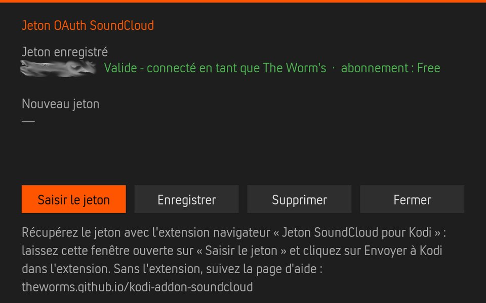
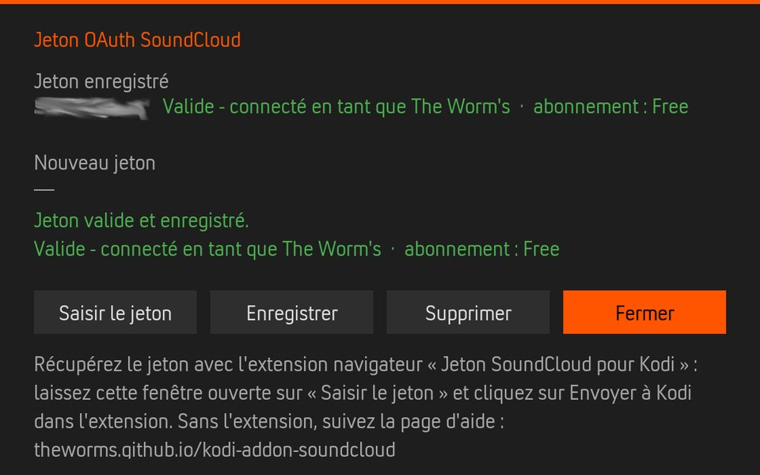

For the TheWorms Kodi SoundCloud add-on (version 6.0.1 or later).
Pour l'addon SoundCloud Kodi de TheWorms (version 6.0.1 ou plus récente).
The add-on needs your SoundCloud OAuth token to show your likes, playlists, followed artists and listening history. You take it from your browser, where you are signed in to soundcloud.com, and give it to Kodi in the add-on's OAuth token window. Kodi checks it with SoundCloud before keeping it.
L'addon a besoin de votre jeton OAuth SoundCloud pour afficher vos J'aime, playlists, abonnements et votre historique d'écoute. Vous le prenez dans votre navigateur, où vous êtes connecté à soundcloud.com, et vous le donnez à Kodi dans la fenêtre Jeton OAuth de l'addon. Kodi le vérifie auprès de SoundCloud avant de le garder.
The easiest way takes five steps and no technical manipulation: the browser extension below. Without it, see “Without the extension” further down.
Le plus simple tient en cinq étapes, sans manipulation technique : l'extension navigateur ci-dessous. Sans elle, voyez « Sans l'extension » plus bas.
about:debugging#/runtime/this-firefox → Load Temporary Add-on… → pick the downloaded .zip. A key icon appears in the toolbar. It stays until Firefox restarts — enough to get a token; load it again the same way next time.chrome://extensions, switch on Developer mode, then Load unpacked → pick the folder. Pin the extension (puzzle-piece menu → pin) to see its icon.about:debugging#/runtime/this-firefox → Charger un module complémentaire temporaire… → choisissez le .zip téléchargé. Une icône en forme de clé apparaît dans la barre d'outils. Elle reste installée jusqu'au redémarrage de Firefox — assez pour récupérer un jeton ; rechargez-la de la même façon la prochaine fois.chrome://extensions, activez le Mode développeur, puis Charger l'extension non empaquetée → choisissez le dossier. Épinglez l'extension (menu en forme de pièce de puzzle → épingler) pour voir son icône.Sign in if needed. The extension reads the token from the requests the site sends by itself. When its icon shows a green OK badge, the token has been captured and SoundCloud accepted it.
Connectez-vous si besoin. L'extension lit le jeton dans les requêtes que le site envoie de lui-même. Quand son icône affiche un badge vert OK, le jeton est récupéré et SoundCloud l'a accepté.
SoundCloud add-on settings → Account → Manage the OAuth token… The window shows the token currently saved and whether SoundCloud still accepts it. Leave it on Enter token.
Paramètres de l'addon SoundCloud → Compte → Gérer le jeton OAuth… La fenêtre affiche le jeton actuellement enregistré et indique si SoundCloud l'accepte encore. Laissez-la sur Saisir le jeton.

Click the extension icon → Send to Kodi → Kodi's IP address (for example 192.168.1.20), the user and password of Kodi's web server → Send to Kodi. The extension opens the window's keyboard and types the token in it.
Cliquez sur l'icône de l'extension → Envoyer à Kodi → adresse IP de Kodi (par exemple 192.168.1.20), utilisateur et mot de passe du serveur web de Kodi → Envoyer à Kodi. L'extension ouvre le clavier de la fenêtre et y tape le jeton.
kodi.local.kodi.local.Extension → Copy token, then in Kodi Enter token and paste it. Typing a long token with a TV remote is painful: a remote app such as Kore or Yatse can paste text from your phone into Kodi's keyboard.
Extension → Copier le jeton, puis dans Kodi Saisir le jeton et collez-le. Taper un long jeton à la télécommande est pénible : une application comme Kore ou Yatse permet de coller le texte depuis votre téléphone dans le clavier de Kodi.
Kodi asks SoundCloud right away and shows the result in the window:
Kodi interroge SoundCloud aussitôt et affiche le résultat dans la fenêtre :
The last result is also shown in the add-on settings, under Account → Token status.
Le dernier résultat est aussi affiché dans les paramètres de l'addon, sous Compte → État du jeton.

api-v2 in the filter box, reload the page (F5) and wait a few seconds.me or track_likes (skip OPTIONS rows).Authorization: OAuth 2-XXXXXX-XXXXXXXX-XXXXXXXX and copy only what follows OAuth .api-v2 dans le champ de filtre, rechargez la page (F5) et attendez quelques secondes.me ou track_likes (ignorez les lignes OPTIONS).Authorization: OAuth 2-XXXXXX-XXXXXXXX-XXXXXXXX et copiez uniquement ce qui suit OAuth .F12 → Storage (Firefox) or Application (Chrome / Edge) → Cookies → https://soundcloud.com → copy the value of oauth_token. Depending on how SoundCloud sets up your session, it may be refused: the Save button tells you at once.
F12 → Stockage (Firefox) ou Application (Chrome / Edge) → Cookies → https://soundcloud.com → copiez la valeur de oauth_token. Selon la façon dont SoundCloud gère votre session, elle peut être refusée : le bouton Enregistrer vous le dit aussitôt.
get_soundcloud_token.py reads the oauth_token cookie from your Firefox profile, checks it with SoundCloud, then copies it or types it into Kodi's OAuth token window (open on Enter token):
get_soundcloud_token.py lit le cookie oauth_token dans votre profil Firefox, le vérifie auprès de SoundCloud, puis le copie ou le tape dans la fenêtre Jeton OAuth de Kodi (ouverte sur Saisir le jeton) :
python3 get_soundcloud_token.py # copy / copier python3 get_soundcloud_token.py --kodi KODI_IP # send to Kodi / envoyer à Kodi
Authorization header of requests that soundcloud.com sends to api-v2.soundcloud.com, keeps the token in memory (forgotten when the browser closes) and only contacts Kodi when you click Send. Kodi's remote control is plain HTTP: the token and Kodi's password then cross your local network unencrypted, as with any Kodi remote app. Treat the token like a password. Source code: tools/token-extension.Authorization des requêtes que soundcloud.com envoie à api-v2.soundcloud.com, garde le jeton en mémoire (oublié à la fermeture du navigateur) et ne contacte Kodi que quand vous cliquez sur Envoyer. Le contrôle à distance de Kodi est en HTTP simple : le jeton et le mot de passe de Kodi passent alors en clair sur votre réseau local, comme avec toute application de télécommande Kodi. Traitez le jeton comme un mot de passe. Code source : tools/token-extension.